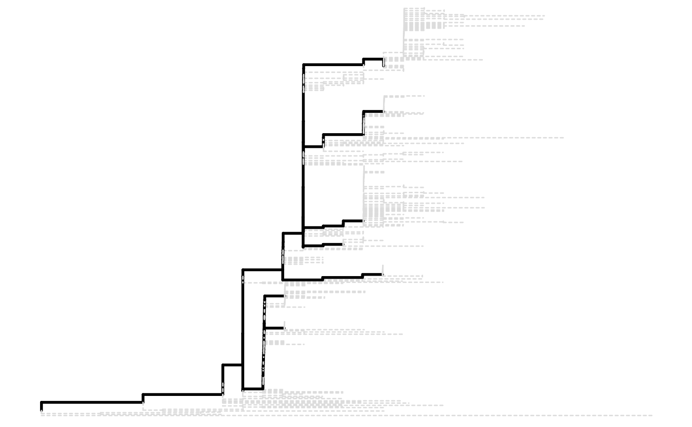
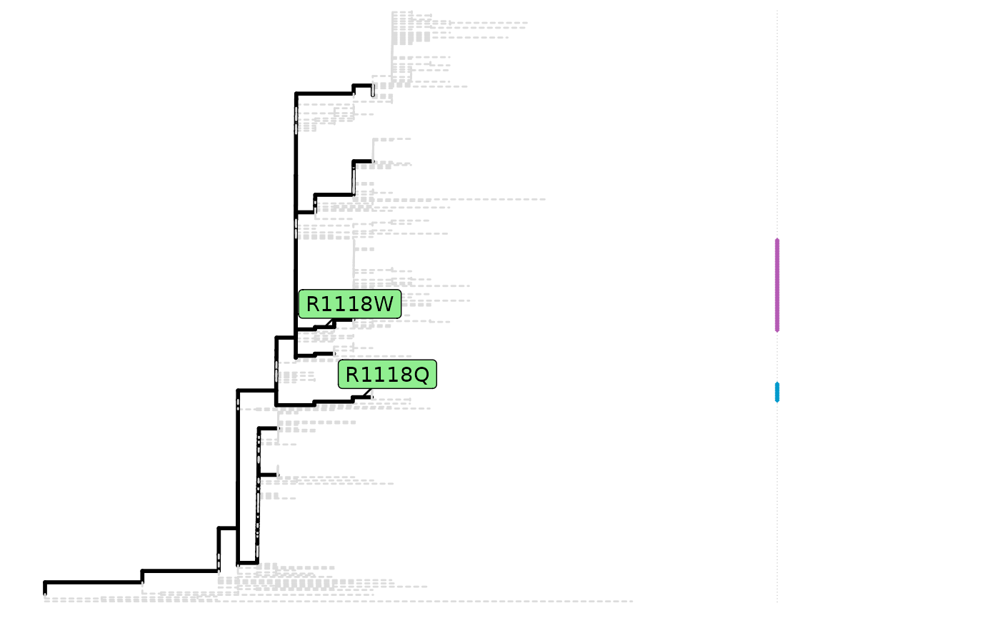
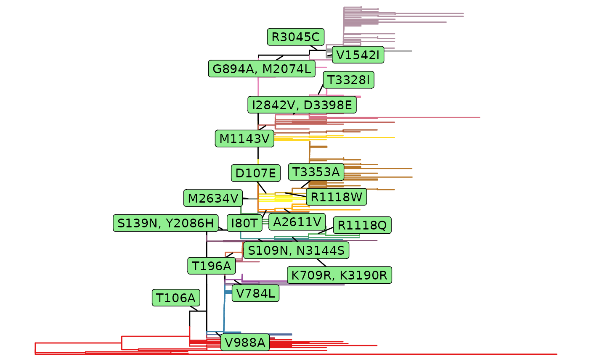
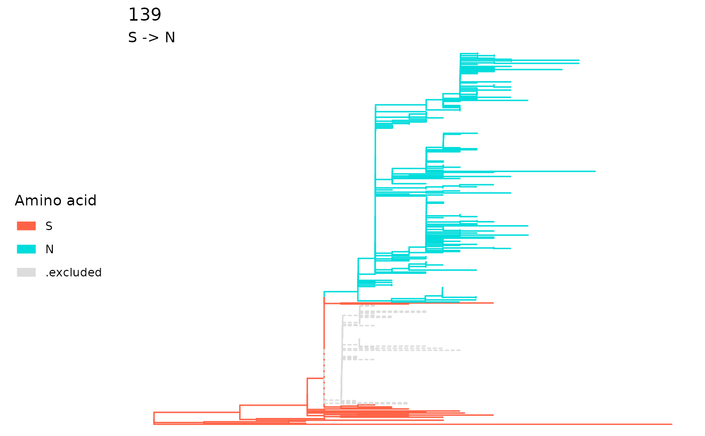
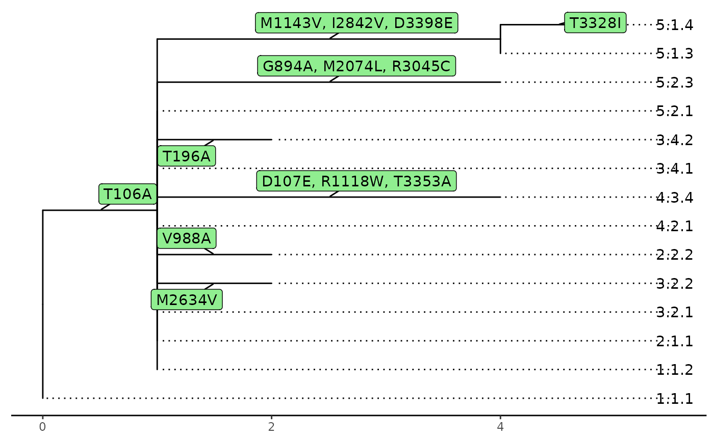
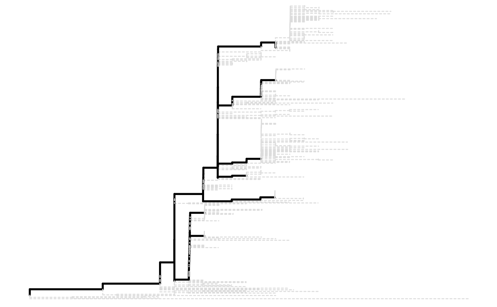
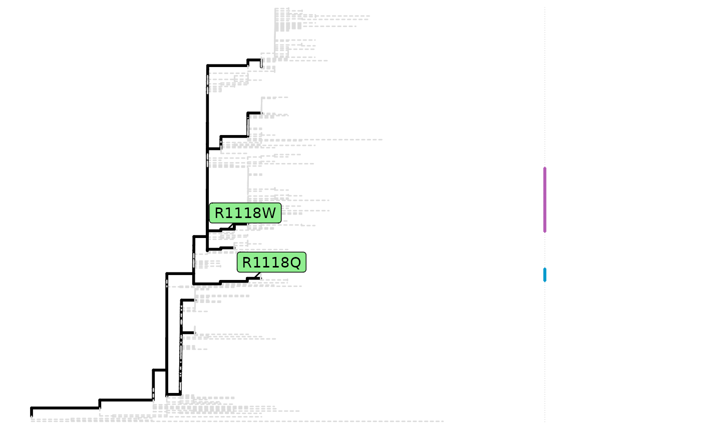
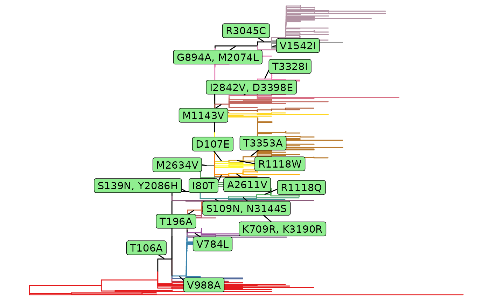
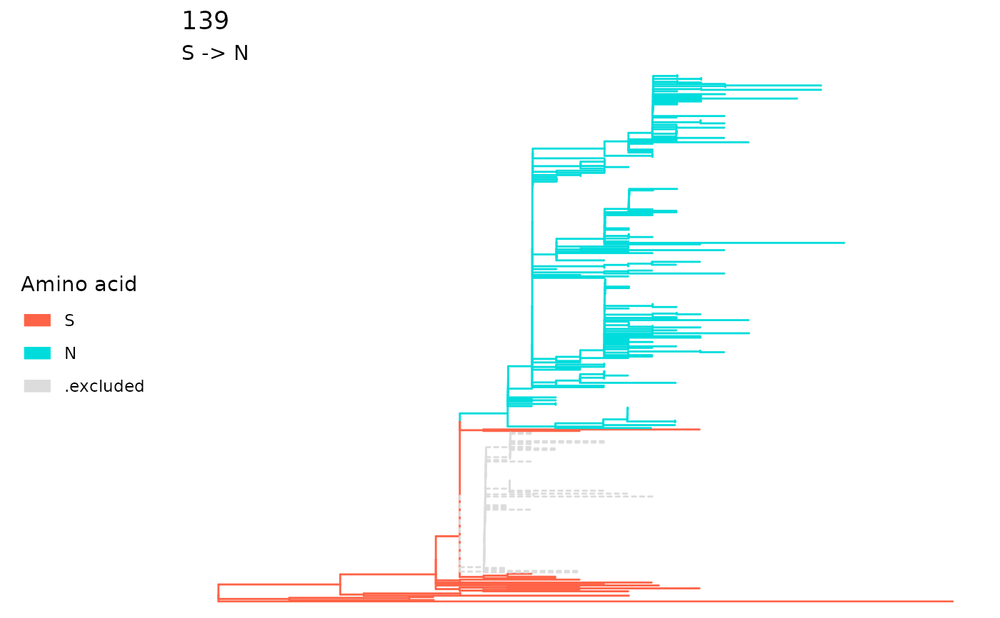
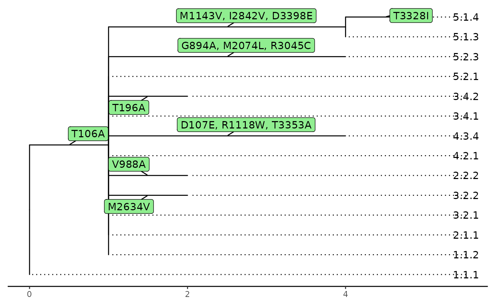

The plot function to visualize the return of functions in the
package. The underlying function applies ggplot2. The
function name plot is used to keep the compatibility with previous
versions, but they do not behave like the generic plot
function since 1.5.4.
A phyMSAmatched object will be plotted as a tree
diagram.
A lineagePath object will be plotted as a tree
diagram and paths are black solid line while the trimmed nodes and tips
will use gray dashed line.
A parallelSites object will be plotted as original
phylogenetic tree marked with parallel mutations attached as dot plot.
A fixationSites object will be plotted as original
phylogenetic tree marked with fixation substitutions.
A sitePath object can be extracted by using
extractSite on the return of fixationSites.
A fixationIndels object will be plotted as
original phylogenetic tree marked with indel fixation.
A fixationPath object will be plotted as a
phylo object. The tips are clustered according to the fixation
sites. The transition of fixation sites will be plotted as a phylogenetic
tree. The length of each branch represents the number of fixation mutation
between two clusters.
# S3 method for phyMSAmatched
plot(x, y = TRUE, ...)
# S3 method for lineagePath
plot(x, y = TRUE, showTips = FALSE, ...)
# S3 method for parallelSites
plot(x, y = TRUE, ...)
# S3 method for fixationSites
plot(x, y = TRUE, tipsGrouping = NULL, ...)
# S3 method for sitePath
plot(x, y = NULL, select = NULL, showTips = FALSE, ...)
# S3 method for fixationIndels
plot(x, y = TRUE, ...)
# S3 method for fixationPath
plot(x, y = TRUE, ...)Arguments
- x
The object to plot.
- y
Whether to show the fixation mutation between clusters. For
lineagePathobject andsitePathobject, it is deprecated and no longer have effect since 1.5.4.- ...
Other arguments. Since 1.5.4, the function uses
ggtreeas the base function to make plots so the arguments inplot.phylowill no longer work.- showTips
Whether to plot the tip labels. The default is
FALSE.- tipsGrouping
A
listto hold the grouping of tips for how the tree will be colored.- select
For a
sitePathobject, it can have result on more than one evolution pathway. This is to select which path to plot. The default isNULLwhich will plot all the paths. It is the same asselectinplotSingleSite.
Value
A ggplot object to make the plot.
Examples
data(zikv_tree)
data(zikv_align)
tree <- addMSA(zikv_tree, alignment = zikv_align)
plot(tree)
 paths <- lineagePath(tree)
plot(paths)

parallel <- parallelSites(paths)
plot(parallel)

fixations <- fixationSites(paths)
plot(fixations)

sp <- extractSite(fixations, 139)
plot(sp)

x <- fixationPath(fixations)
plot(x)

paths <- lineagePath(tree)
plot(paths)

parallel <- parallelSites(paths)
plot(parallel)

fixations <- fixationSites(paths)
plot(fixations)

sp <- extractSite(fixations, 139)
plot(sp)

x <- fixationPath(fixations)
plot(x)
